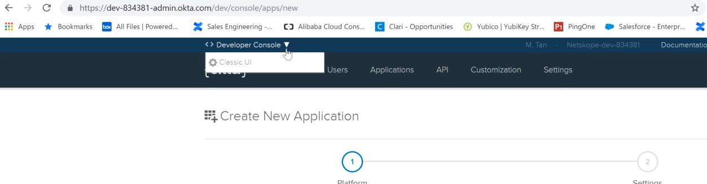
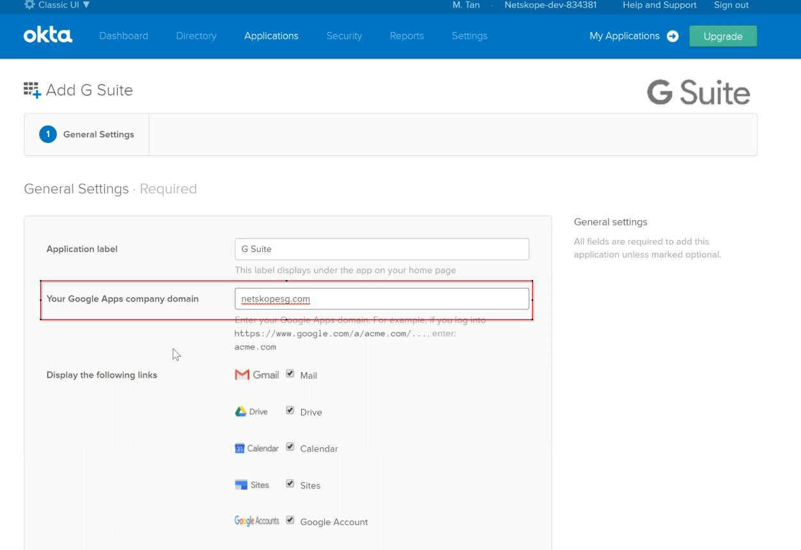
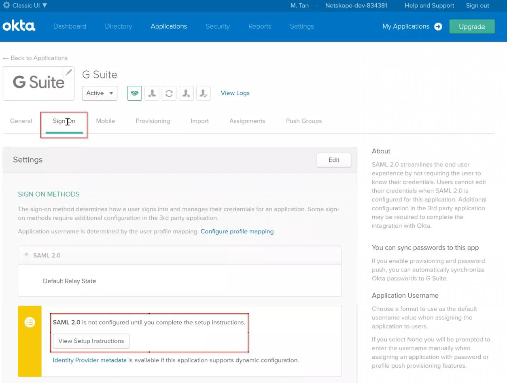
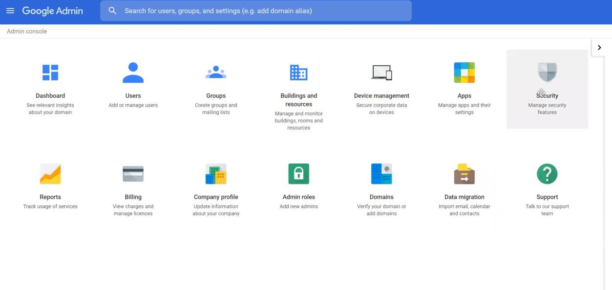
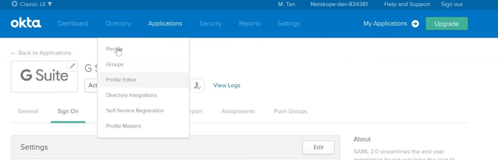
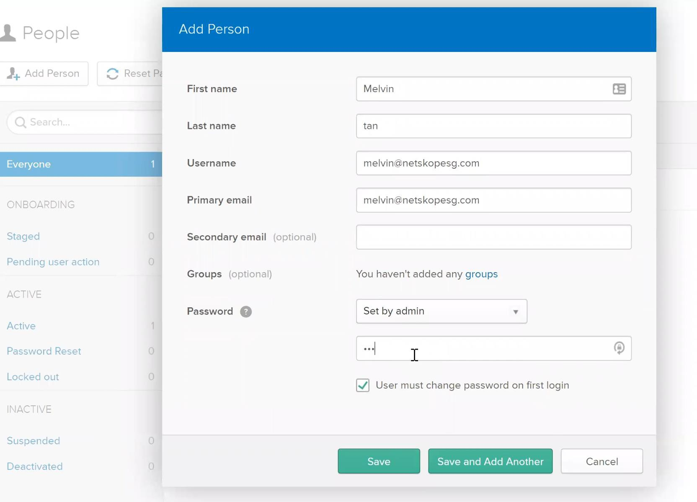
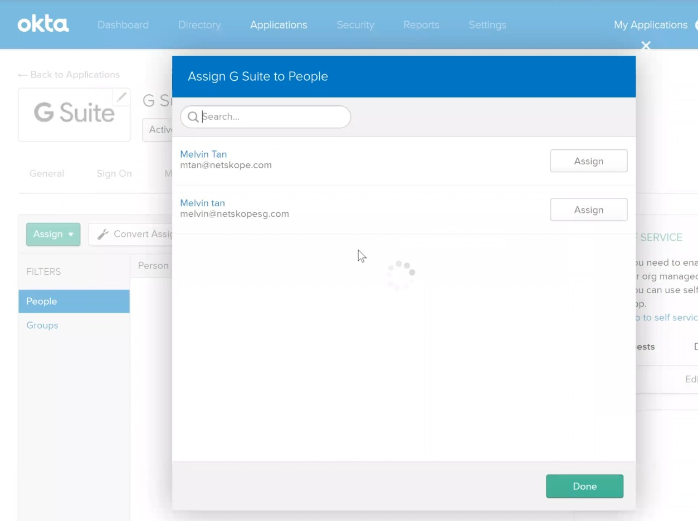

Configure Federation with Okta
Create an Okta developer account at https://developer.okta.com.
Have a G Suite account ready. If you do not have one, create one with a valid domain.
Log in to OKTA Developer account and change it to the Classic UI.
 Click Applications.
Click Add Application and search for G Suite. When it appears, click Add.

Enter your G Suite domain in General Settings, then click Done at the bottom.
 Click Sign On, and then click View Setup Instructions. A page with the setup instructions will open.
 Go to the Setup document that you just opened and follow the Configuration steps for G suite. Go to your G Suite admin page and click Security.
 Follow the rest of the steps as stated in the document opened in Okta.
Once done, add your users to be provisioned in Okta. Go to People.
 Click Add Person and enter the details. The email is the email of the user in the G Suite account.
 Go back to Applications and click on your G Suite application. Go to Assignment and assign the user you have created in the previous step to the G Suite application.
 Next, test the federation to make sure that you can login via Okta to G Suite. Copy the URL, https://dev-834381.okta .com (your URL will be different as the developer ID is different). Open that page and login with the user you have assigned to the G Suite application in OKTA. Setup the account after you have login.
Once you have logged in, click on Gmail and make sure you can get redirected to Gmail. If it is successful, your federation works.